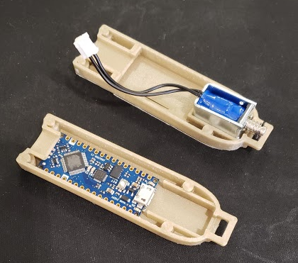
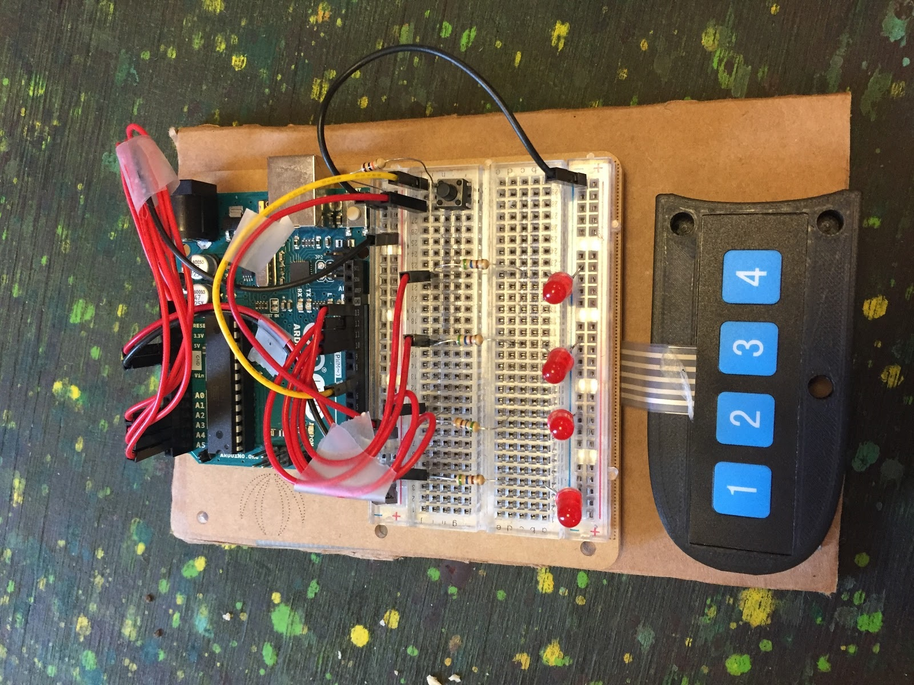

Thomas John Roeber Malchodi
I am a Mechanical Engineer with experience in robotics and manufacturing and a passion for side projects. Below are a sample of my personal, academic, and research projects. More information on my work experience can be found in my resume.
Drink and Thrive - Capstone Design Project

Create a voluntary device for drivers to stop themselves from driving drunk before they even take a sip. The final solution should be small and discrete, while being cheap and convenient enough to encourage use.
The Drink and Thrive Team designed a standalone device to allow drivers to make safe decisions about driving before they ever start drinking. The device secures a single standard car key, and only releases it when the driver passes a test to prove they are below the legal BAC limit. The final device fits easily in a pocket or purse, and the final test is quick and easy to take, requiring just a minute to learn.
After extensive research into breathalyzers and other methods of determining BAC, the team determined that a proprietary test was the only way to accomplish our size and cost goals for the device. The final test chosen involves reaction and dextyerity and is taken once while sober to secure the key. It is taken a second time later to retrieve the key.
I led the electrical design and completed all electronics prototyping. I led test design and validation, and helped with the arduino coding and market research for the project.
Custom Electric Guitar

Design and build a solidbody electric guitar from scratch.
The complete guitar. Designed and built the wooden elemenents from lumber, designed and created the complete pickup circuit. The guitar has a solid mahogany body with a carved top, a flame maple neck, and an ebony fretboard. Sound is conducted by dual humbucking pickups with coil cut switches to turn either into a single coil. Pickup selection is done with a dual potentiometer to fade between the pickups in any combination. Tone and volume are controlled for the overall output.
Hybrid Vehicle Powertrain Simulation
Design and simulate a midsize sport sedan with a parallel hybrid architecture.
A sport sedan powertrain simulation that competes with indusrty standard vehicles while maintaining reasonable component prices. More information on the final design can be found on the poster, and technical details can be found in the paper.
Ran simulations in MATLAB and Simulink to select components including electric machines, batteries, engine, and gear ratios. Worked on Simulink simulator and fuel efficient electromechanical control strategy.
Lathe Data Collection to Predict Tool Life
Collect data from a CNC lathe to use in a machine learning model with the goal of improving tool life predictions to be more precise than current tabulated methods.
A data collection and feedback system that collects vibration and metadata from the lathe and uses a machine learning model to predict remaining tool life, then adjusts lathe parameters to ensure the tool lasts through the full cut. More information can be found in the paper published for the project.
Designed protective enclosure for a vibration sensor for the tool, created a Python script on a Raspberry Pi to collect data from the vibration sensor and the lathe itself, combien the data, and send it to the cloud based learning model. Ran cuts to collect training data for the machine learning model.
Self-Leveling Platform
Design a platform and control system that stays level even when the handle is moved.
A plaftorm the self levels in 1 degree of freedom with a DC motor when the handle is moved, as seen in this video.
Designed and built the physical platform. Designed the controller based on a root locus model in MATLAB, implemented it in LabVIEW.
Prediction of Injury Severity in Car Crashes with Machine Learning
Train a machine learning model to predict the level of injury a passenger will sustain in a car crash given information about the passenger prior to the crash.
A Linear SVM model that predicts mild, major, or fatal injury with 72% accuracy. To see more about the project, visit the final presentation page.
Data set discovery and preparation, experimentation with Decision Trees, Random Forest, and Neural Networks for injury prediction.
Wearable Synthesizer Controls - Moog Hackathon Project
Create a wearable device to control a Moog Werkstatt Synthesizer.
A pair of gloves that control the synthesizer through motion, acceleration, and pressure sensors. The final product can be seen in this video.
Creating the gloves and integrating 4 pressure sensing resistors, 2 accelerometers, and 2 arduinos while maintaining comfort and playability.
Handmade Collared Shirt
Create a handmade collared shirt from scratch.
A unique shirt with an eye catching pattern.
Found a pattern and modified to correct size for fitted shirt. Selected fabric and cut out fabric panels. Sewed panel together with sewing machine, approximately 10 hours.